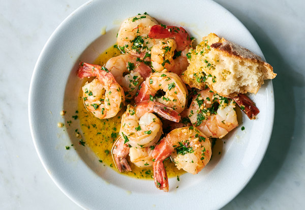

Shrimp Scampi

Description
this classic pasta dish is delicious paired with a glass of wine & a weekend in!
Ingredients
- 2 tablespoons butter
- 2 tablespoons extra-virgin olive oil
- 4 garlic cloves, minced
- 1/2 cup of broth or dry white wine
- 3/4 teaspoon kosher salt, or to taste
- 1/8 teaspoon crushed red pepper flakes
- 1/8 teaspoon freshly ground black pepper
- 1 3/4 lbs large shrimp, shelled
- 1/3 cup chopped parsley
- freshly squeezed juice of 1/2 lemon
- cooked angel hair pasta
Steps
- In a large skillet, melt butter with olive oil. Add garlic and sauté until fragrant, about 1 minute. Add wine or broth, salt, red pepper flakes and plenty of black pepper and bring to a simmer. Let wine reduce by half, about 2 minutes.
- Add shrimp and sauté until they just turn pink, 2 to 4 minutes depending upon their size. Stir in the parsley and lemon juice and serve over pasta.